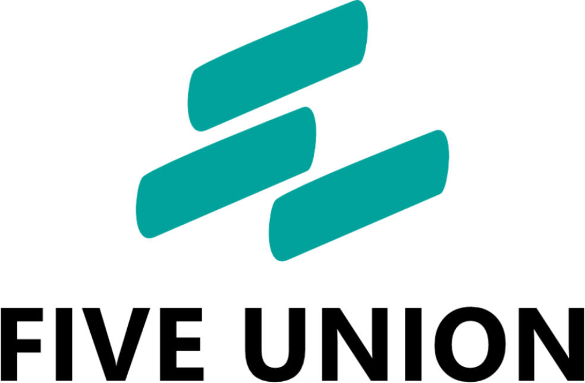
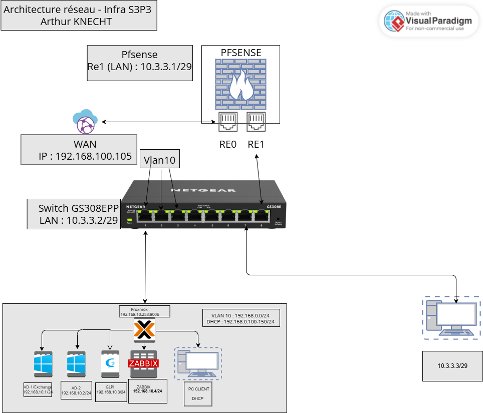

Spécialiste Systèmes et Réseaux Informatiques
Passionné par l'infrastructure IT et les nouvelles technologies, je développe des compétences pointues en administration système, sécurité réseau, virtualisation et cybersécurité. Mon objectif : concevoir et maintenir des architectures informatiques robustes et sécurisées.
Découvrez mon parcours académique et professionnel, mes compétences techniques et mon expertise en systèmes et réseaux informatiques
Explorez mes réalisations en infrastructure IT, administration réseau et déploiements de solutions professionnelles
Travaux pratiques, études de cas et projets académiques réalisés durant ma formation BTS SIO SISR
Suivez mes analyses et recherches sur les dernières innovations en cybersécurité, cloud computing et systèmes
Référentiel complet des compétences acquises durant mon parcours BTS SIO option SISR
Découvrez mon parcours, mes compétences et mon expertise
Technicien Systèmes & Réseaux
Bonjour ! Je m'appelle Arthur Knecht et je suis actuellement étudiant en BTS SIO (Services Informatiques aux Organisations) avec la spécialité SISR (Solutions d'Infrastructure, Systèmes et Réseaux).
Passionné par les technologies de l'information et particulièrement par la gestion d'infrastructures réseau, je développe mes compétences dans l'administration système, la sécurité informatique, la virtualisation et le cloud computing.
Mon objectif professionnel est de devenir un expert en infrastructure IT, capable de concevoir, déployer et maintenir des systèmes informatiques complexes tout en garantissant leur sécurité, leur performance et leur disponibilité.
Actuellement, je suis en alternance dans le domaine de l'administration systèmes et réseaux, dans la région de Gémenos, ce qui me permet de mettre en pratique mes compétences sur des environnements de production réels et d'acquérir une expérience professionnelle significative.
Réseaux & Infrastructure
Configuration et maintenance d'équipements réseau professionnels, routage avancé et commutation. Maîtrise approfondie des protocoles réseaux (TCP/IP, DHCP, DNS, OSPF, EIGRP), configuration de VLANs, routage inter-VLAN et sécurisation des communications.
Sécurité & Protection
Implémentation de solutions firewall professionnelles et configuration de VPN sécurisés. Mise en place de règles de filtrage avancées, configuration de VPN site-à-site et accès distant sécurisé (IPsec, OpenVPN), détection d'intrusions et prévention des menaces.
Gestion d'Identités
Administration complète d'environnements Active Directory en entreprise. Création et gestion d'unités organisationnelles complexes, déploiement de stratégies de groupe (GPO) avancées, gestion des comptes utilisateurs et groupes de sécurité, intégration de services DNS et DHCP.
Virtualisation & Cloud
Déploiement et gestion d'infrastructures virtualisées professionnelles. Administration d'hyperviseurs open-source et Microsoft, migration de machines virtuelles, gestion optimisée des ressources, mise en place de clusters haute disponibilité et disaster recovery.
Administration Système
Administration complète multi-plateforme de serveurs de production. Installation, configuration et maintenance avancée de serveurs Windows Server (2016/2019/2022) et distributions Linux (Debian, Ubuntu Server, CentOS). Automatisation via PowerShell et Bash scripting.
Formation spécialisée en Solutions d'Infrastructure, Systèmes et Réseaux. Acquisition de compétences approfondies en administration système, gestion de réseaux, virtualisation et sécurité informatique.
Expérience professionnelle en administration systèmes et réseaux dans un environnement de production réel. Participation active à la gestion et à l'évolution de l'infrastructure IT de l'entreprise.
Obtention du Baccalauréat avec des spécialités orientées vers les sciences, développant des compétences analytiques et de résolution de problèmes complexes, essentielles dans le domaine de l'informatique.
Cisco Networking Academy
En cours - 2027
LPI - LPIC-1
Objectif 2027
Présentation rapide de l'entreprise où je suis en alternance
Nom : FiveUnion 
Secteur : Location de matériel informatique reconditionné
Localisation : Gémenos / Région
FiveUnion propose la location et le reconditionnement d'ordinateurs, serveurs et équipements réseau pour les entreprises. L'entreprise achète, remet à neuf et loue des matériels performants et économiques afin d'équiper des postes de travail, salles serveurs et événements tout en favorisant une démarche durable.
Services & produits : Location d'ordinateurs portables et PC reconditionnés, serveurs reconditionnés, équipements réseau (switches, routeurs), maintenance et support, contrats de location avec options de renouvellement, et prestations d'installation/configuration sur site.
Taille de l'équipe : Petite structure d'environ 10–20 personnes, composée de techniciens en reconditionnement, d'un responsable technique et d'une petite équipe commerciale.
Mon rôle : Alternant en administration systèmes et réseaux — gestion et maintenance des équipements, déploiement et configuration de postes et serveurs, support interne, sauvegardes, sécurité réseau et rédaction de procédures.
Explorez mes réalisations en infrastructure IT et administration réseau
Contexte : Mise en place d'une infrastructure réseau complète et sécurisée pour une entreprise de 50 postes clients avec des exigences élevées en termes de disponibilité et de sécurité.
Réalisations techniques :
Contexte : Conception et déploiement d'un environnement virtualisé complet pour optimiser l'utilisation des ressources serveurs et améliorer la flexibilité de l'infrastructure.
Réalisations techniques :
Contexte : Réalisation d'un audit de sécurité complet et implémentation de solutions de sécurisation pour une infrastructure existante présentant des vulnérabilités.
Réalisations techniques :
Contexte : Restructuration complète de l'architecture réseau d'une entreprise pour améliorer les performances, la sécurité et la gestion des accès.
Réalisations techniques :
Travaux pratiques et projets académiques réalisés durant ma formation
Objectif pédagogique : Maîtriser l'administration complète d'un environnement Active Directory en entreprise avec plusieurs sites géographiques.
Compétences développées :

Objectif pédagogique : Concevoir et déployer une architecture réseau professionnelle segmentée avec haute disponibilité.
Compétences développées :
Objectif pédagogique : Déployer et sécuriser un serveur web avec certificats SSL/TLS et bonnes pratiques de sécurité.
Compétences développées :
Objectif pédagogique : Administrer un serveur de base de données et mettre en place des stratégies de sauvegarde.
Compétences développées :
Objectif pédagogique : Découvrir la conteneurisation et le déploiement d'applications modernes.
Compétences développées :
Objectif pédagogique : Surveiller et analyser les performances d'une infrastructure IT.
Compétences développées :
Suivi actif des évolutions en cybersécurité, cloud computing et systèmes
Dans le domaine des systèmes et réseaux informatiques, la veille technologique est essentielle pour rester à jour avec les dernières innovations, menaces de sécurité et meilleures pratiques. Je maintiens une veille active sur plusieurs domaines clés de l'infrastructure IT.
Veille active sur les dernières menaces informatiques, vulnérabilités critiques et techniques d'attaque. Focus particulier sur la sécurisation des infrastructures d'entreprise et la protection des services critiques.
Thématiques suivies :
Suivi des évolutions des solutions de virtualisation et des plateformes cloud (Azure, AWS, Proxmox) utilisées en environnement de production professionnel.
Thématiques suivies :
Veille technologique sur les nouveautés des systèmes d'exploitation serveurs (Windows Server, Linux) et les outils modernes d'automatisation pour l'administration système.
Thématiques suivies :
Suivi des innovations en matière d'infrastructures réseau, protocoles émergents et solutions Software-Defined Networking.
Thématiques suivies :
Référentiel complet des compétences BTS SIO SISR
Le tableau de compétences et situations (TCS) recense l'ensemble des compétences professionnelles acquises durant ma formation BTS SIO option SISR, organisées par activités selon le référentiel officiel de l'Éducation Nationale.
Gestion du support utilisateur, installation et mise à disposition de services informatiques
Maintenance préventive et corrective, sécurisation et exploitation des systèmes et réseaux
Administration avancée, optimisation et sécurisation des infrastructures
Gestion des équipements, licences et documentation technique
Discutons de vos projets ou d'opportunités professionnelles
Je suis actuellement à la recherche d'opportunités en alternance dans le domaine de l'administration systèmes et réseaux. N'hésitez pas à me contacter pour discuter de projets, de collaborations ou d'opportunités professionnelles.
Région de Gémenos, Marseille, France